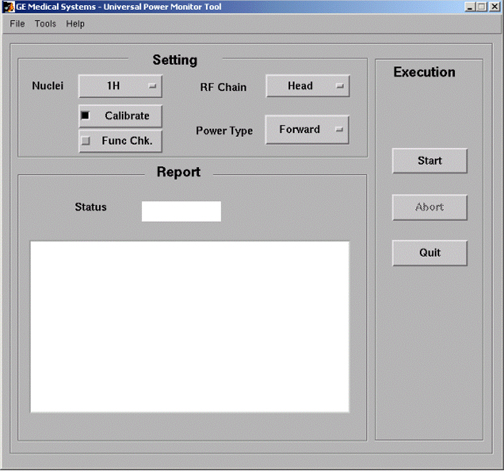

Operating Documentation
Direction 5500113, Rev# 3
Discovery MR750 3.0T Service Methods
Module Version 2.0, Version Date 6/19/09
Operating Documentation |
| Required Persons | Preliminary Reqs | Procedure | Finalization |
|---|---|---|---|
| 1 | Not Applicable | 30 mins | Not Applicable |
| Last Update | 05/17/2007 |
| ||||
| FATAL ELECTRIC SHOCK HAZARD!! | ||||
| Dangerous voltages throughout the cabinet | ||||
| TO PREVENT FATAL ELECTRIC SHOCK, MAKE SURE THE RF AMPLIFIER IS DISABLED WHEN CONFIGURING THE CALIBRATION TOOLS. |
Inhibit TR faults. Disable the Driver Module TR fault detection in the RFS (RF in the System Cabinet), (see Illustration 1). Move switch 2 to the TR Disable position.
Illustration 1: Driver Module Front Switches

| NOTE: | This tool must see a Landmark only. It is not necessary to have a Head coil in place, or any other scan parameter entered than what is described below. Simply Landmark on the cradle where the Head coil would be. |
To establish a Landmark, Start a [New Exam].
Enter the following parameters:
Patient ID: geservice
Weight: 111
Press [Align] button on.
Move the cradle to the Home position and then drive it into the bore.
Press Landmark button when the align light is approximately where the center of the head coil would be. Press the Advance to Scan button.
From the Common Service Desktop Select:
Select [Calibration Tab]
Select [UPM Tool]. Illustration 2.
Illustration 2: Starting UPM Tool

Select [Click here to start the tool] to start UPM tool. See Illustration 2.
Select the Nuclei [1H]. See Illustration 3.
Illustration 3: UPM Monitor Tool GUI

| NOTE: | The first time running the UPM Calibration tool after a load from cold, the following Error may appear: “The spectroRFampType and upm.config do not match! Please run the UPM Tool config file editor and hit [Restore Defaults] and save the config file”. If this error appears, click [File] -> “Edit Config”. When the window opens, click [Restore Defaults] then close the screen. The tool will now have the correct information and this pop-up will not appear again during future UPM Calibrations. |
Select the RF Chain you are going to calibrate [Head].
Select: [Calibrate] Button
Select Power Monitor type. [Forward].
Select [Start] button.
| NOTE: | Advisory message indicating head coil not present can be ignored. |
Status should indicate Pass/Fail from 1 minute to 7.5 minutes depending on software version (tool should notify user of current step in progress). If Failure occurs, see Universal Power Monitor (UPM) Troubleshooting.
Proceed to UPM- Body and Head Functional Check before moving to Finalization, Step 1.
Remove the cables and power measurement equipment.
Re-attach the Head and Body Heliax Cables.
Remove the cables and power measurement equipment.
Re-attach the Head Heliax Cables.
Re-enable T/R Drive fault detection. See Illustration 1.
Upon completion of any UPM calibration, [Reset TPS]. The system will not scan until this step is complete.